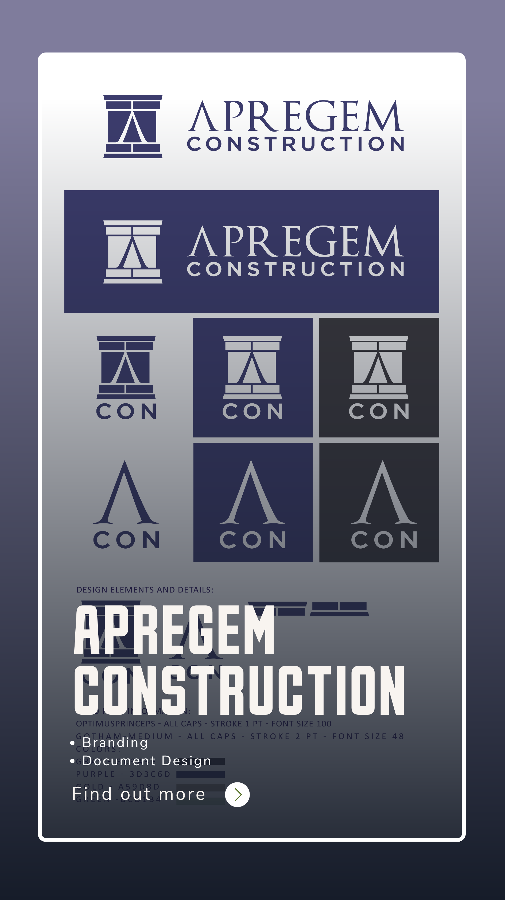
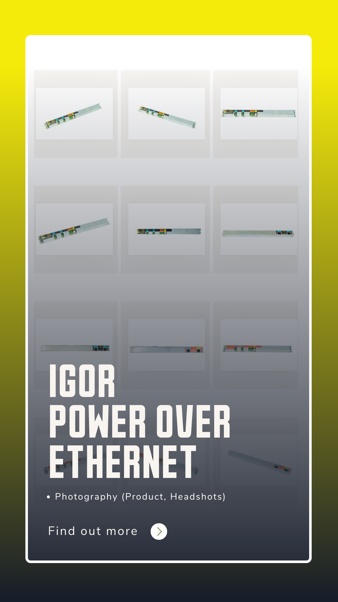
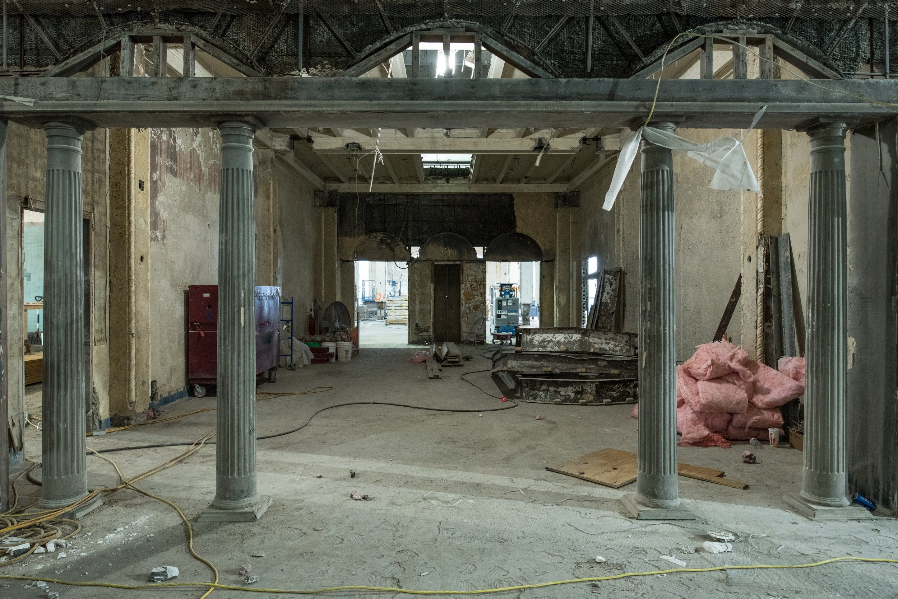
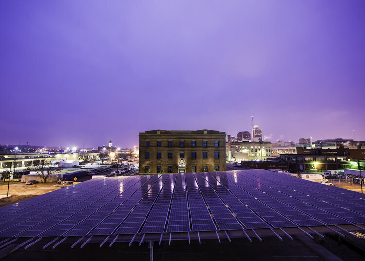
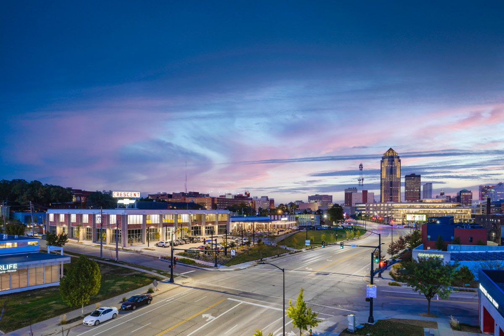
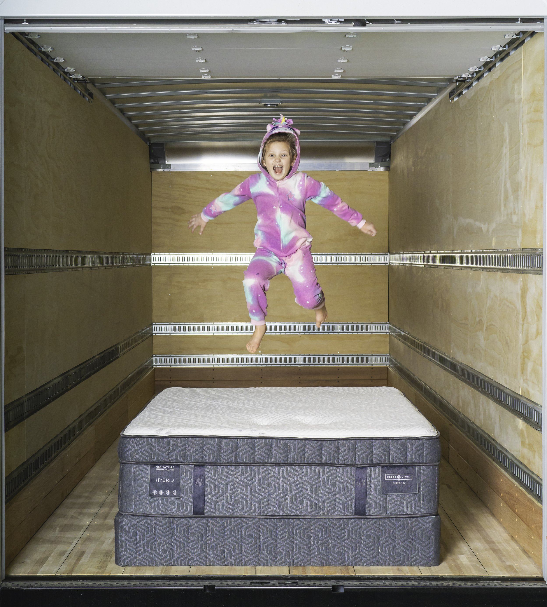
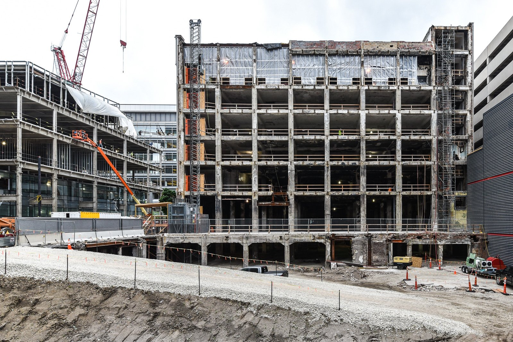
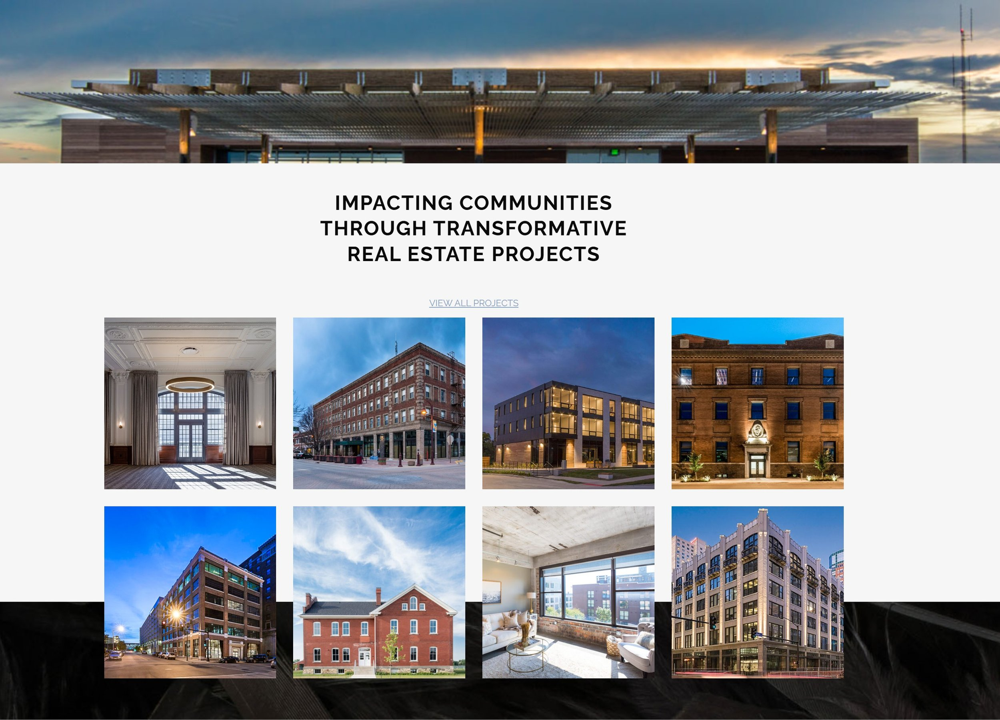

Marketing operating system
MODUS
CRM implementation, website, proposal design, photography, company profile video, YouTube, events, social, and brand management.
AI extension: proposal and business-development workflows.Work and proof
The work is broader than a few thumbnails: websites, proposals, CRM support, brand identity, architectural photography, construction documentation, product images, YouTube launches, headshots, and company profile videos.
309 source images were pulled from the current Jackall Creative site and organized locally so the new Cloudflare site has a complete image base to draw from.
Featured case studies
Each case highlights the client need, Jackall's role, the creative deliverables, and the AI-enabled workflows that can extend the value today.
Marketing operating system
CRM implementation, website, proposal design, photography, company profile video, YouTube, events, social, and brand management.
AI extension: proposal and business-development workflows.
Construction proof system
Website design, project photography, headshots, proposal materials, and professional visual identity support.
AI extension: project archive, case-study drafts, proposal content.
Video distribution system
Company profile video, YouTube channel development, headshots, and project photography.
AI extension: video summaries, clips, captions, and topic planning.
Development visual identity
Website management, construction progress photography, final project photography, team headshots, and brand support.
AI extension: image tagging, investor updates, project recap content.
Brand identity
Logo design, brand colors, visual language, document design, and a distinctive identity for a new construction business.
AI extension: launch messaging, sales templates, and brand voice system.
Product photography
Cyclorama studio product photography and advertising images, creating a library of more than 100 product visuals.
AI extension: image metadata, ecommerce descriptions, campaign variations.
Technology product visuals
On-site headshots and precise product photography for a technology company with advanced infrastructure products.
AI extension: sales enablement content and technical visual library.
Ongoing creative support
More than a decade of project photography, staff headshots, event visuals, and brand-aligned content support.
AI extension: recurring content calendar and searchable project library.
Office and people content
Headshots, office photography, and location video content for website and social media use.
AI extension: location pages, social posts, and recruitment content.Deep dive
The new site should use these as the model for future individual case-study pages after launch.

MODUS
MODUS required more than a one-off campaign. The need was sustained visibility, consistent sales support, unified brand standards, and marketing operations that could support relationship-driven business development.

K. Johnson Construction
The company needed professional visuals and digital infrastructure that matched the quality of its work. Jackall built the website, captured projects and people, and supported proposal documents that help prospects understand scale and craftsmanship.
Electrical Installations of Iowa
EII wanted to tell its story more effectively through video and needed a platform to distribute it. Jackall produced the company profile video, supplemented it with headshots and project photography, and launched the YouTube channel as a hub.

Blackbird Investments
Blackbird needed progress photography, final project photography, headshots, and a site to organize its media. Jackall captured transformations over time and helped the company present itself with consistency and confidence.
Image wall
The site can keep expanding with dedicated galleries, but this wall gives visitors a fast signal that Jackall has real visual production range.









